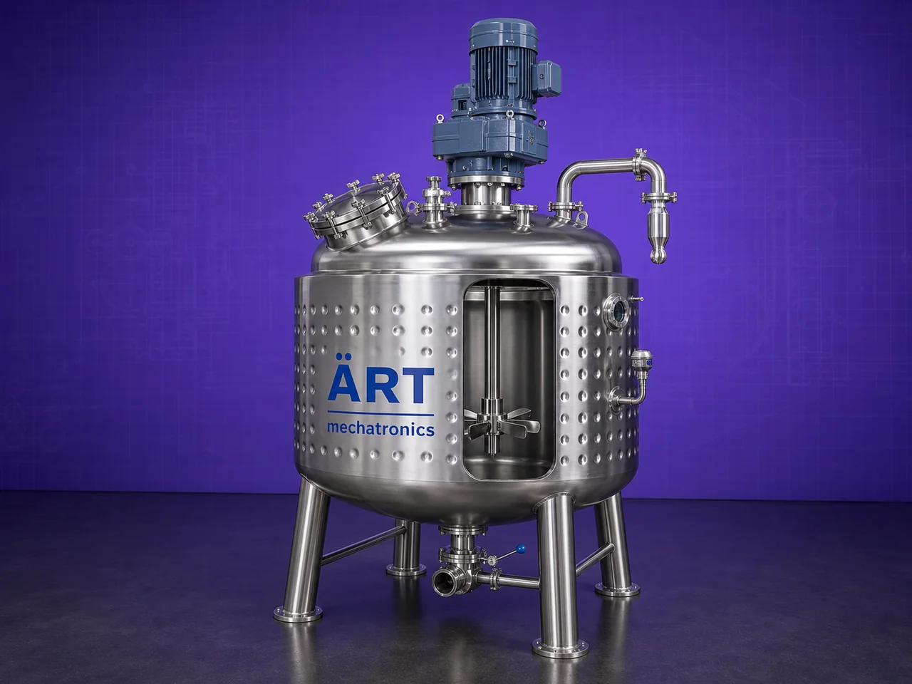

Agitator Mixer Machine (Industrial Liquid Mixing & Agitated Jacketed Tank System)
An Agitator Mixer Machine, also known as an Industrial Liquid Mixer, Agitated Tank, or Agitated Mixing Vessel, is a specialized industrial equipment designed for mixing, blending, dissolving, emulsifying, homogenizing, and circulating liquid or semi-liquid materials.

About the Agitator Mixer Machine
The machine uses a motor-driven agitator shaft fitted with specially designed impellers or blades, which create controlled fluid movement inside the tank to ensure uniform mixing and consistent product quality.
Agitator mixers are widely used in industries such as food processing, pharmaceuticals, chemicals, cosmetics, paints, detergents, beverages, dairy, water treatment, and nutraceuticals, where precise liquid blending and temperature-controlled processing are essential.
The system can also be supplied in a Jacketed Agitator Mixer model, where the tank is fitted with an external heating/cooling jacket using:
• Steam
• Thermal oil
• Hot water
• Chilled water
This enables simultaneous:
- Mixing
- Heating
- Cooling
- Dissolving
- Reaction processing
ART Mechatronics offers high-performance agitator mixer machines, engineered for efficient liquid processing, hygienic operation, energy efficiency, and reliable industrial performance.
One machine, many names
Buyers search for this equipment under many terms — we manufacture all of them:
Working Principle of Agitator Mixer Machine
Ensures homogeneous liquid mixing
In jacketed models:
Types of Agitator Mixer Machines
Industries Using Agitator Mixer Machine
⚗️ Chemical Industry
- Chemical mixing
- Reaction processing
🍃 Food Processing Industry
- Syrups
- Sauces
- Liquid food products
💊 Pharmaceutical Industry
- Liquid medicines
- Syrup mixing
💄 Cosmetic Industry
- Creams
- Lotion mixing
🧼 Detergent Industry
- Liquid detergent blending
🎨 Paint & Coating Industry
- Paint mixing
- Pigment blending
🥛 Dairy & Beverage Industry
- Milk and beverage processing
Features & Advantages
- Uniform liquid mixing and blending
- Suitable for heating and cooling processes
- Ideal for dissolving and emulsification
- Jacketed heating/cooling option available
- Hygienic and easy-to-clean design
- Heavy-duty industrial construction
- Low maintenance operation
- Energy-efficient performance
- Suitable for continuous and batch processing
Technical Highlights
- Capacity: Small lab scale to large industrial tanks
- Construction: Stainless Steel / Mild Steel
- Agitator Type:
- Paddle
- Propeller
- Turbine
- Anchor
- Jacket Type:
- Steam jacket
- Cooling jacket
- Drive: Motor with gearbox
- Operation: Manual / Automatic / PLC-based
Turnkey Agitator Mixing Solutions
ART Mechatronics offers:
- Complete agitator mixer system design
- Heating and cooling integration
- Chemical reaction vessel systems
- Automation and control solutions
- Installation & commissioning
- After-sales service & AMC
Why Choose Art Mechatronics
- Expertise in liquid processing systems
- Customized solutions for multiple industries
- Hygienic and durable equipment
- High-performance industrial designs
- Proven industrial reliability
Applications
- Chemical Processing Plants
- Food Processing Units
- Pharmaceutical Manufacturing Plants
- Cosmetic Production Units
- Paint & Coating Industries
- Dairy & Beverage Plants
Industries that use the Agitator Mixer Machine
Related Mixing & Blending machines
Get pricing & specs for the Agitator Mixer Machine
Share the product, target capacity, current process and plant location. These details help our engineers discuss the right machine or line configuration.
One partner, from design to start-up
ART Mechatronics designs, manufactures, installs and commissions your Agitator Mixer Machine solution with regional presence in India, UAE and Thailand.